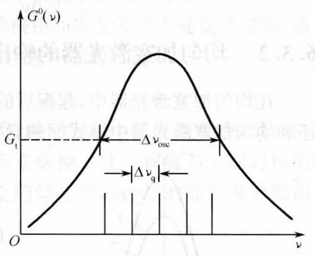

为使问题简化，做如下假设：
1、假设激光器以基横模TEM00运转.
这样，可以不用考虑各横模损耗的差异，各个可能振荡的纵模都具有相同的腔损耗\(\delta\).
2、假设谐振腔为F-P腔.
只有满足谐振腔驻波条件（谐振条件）的纵模才可能存在，这些纵模的频率间隔为：
$$\Delta\nu_q = \frac{c}{2L'}$$激光器小信号增益曲线\(G^0(\nu)\)中，大于阈值增益系数\(G_t\)的那部分曲线所对应的频率范围.

因此，腔内可能存在的纵模数为：
$$N = \left[\frac{\Delta\nu_{osc}}{\Delta\nu_q} \right] + 1$$此处为向下取整
估算的是理论上振荡的最大纵模数，因此+1
在均匀加宽激光器中，起振后的激光模式是否都能形成稳定的振荡模式而输出，这与均匀加宽激光器中模式间的竞争与空间烧孔效应有关.
观察均匀加宽介质激光器的纵模时发现：对于纯均匀加宽介质的激光器，无论有多少频率满足谐振条件并落在振荡带宽内，通常只有一个频率（纵模）获得大于损耗的增益而形成激光振荡.
这种现象可以用模式竞争加以解释.